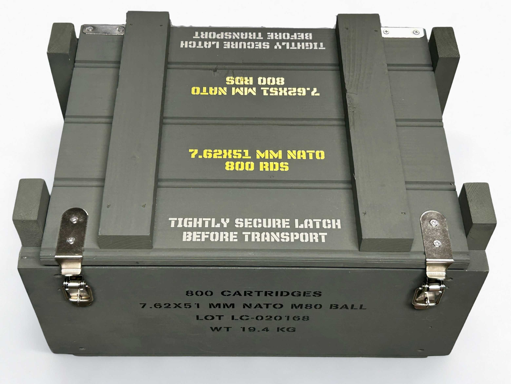
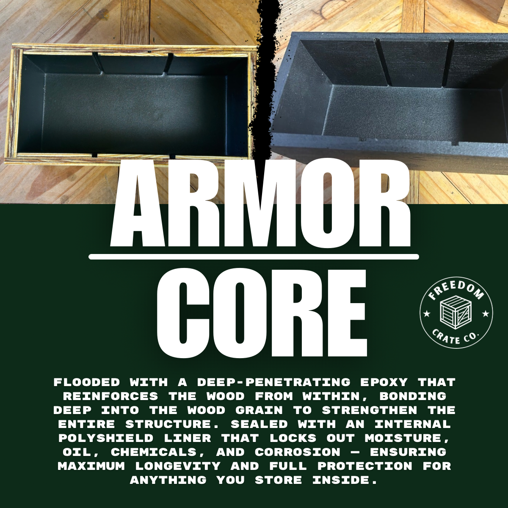

9mm Ammo Boxes
Built for organized handgun ammo storage with a rugged military-style look.
Shop 9mm BoxesRugged, handcrafted wooden ammo boxes built for real storage, range use, garage organization, and long-term durability. Freedom Crate Co. builds military-style ammo crates in Florida — made to be used, not just displayed.

Choose a box built around the way you actually store your ammo — 9mm, 5.56 / .223, .308 / 7.62, range storage, or custom crate builds.
Built for organized handgun ammo storage with a rugged military-style look.
Shop 9mm Boxes
Great for AR-15 owners who want clean, high-capacity storage.
Shop 5.56 Boxes
Heavy-duty storage for larger rifle calibers and serious range setups.
Shop .308 BoxesFreedom Crate Co. builds handcrafted wood ammo boxes for shooters, collectors, and anyone who wants a more practical and distinctive alternative to standard metal cans. Our wooden ammo boxes are designed for ammo storage, organization, and long-term use.
Inspired by classic military crates, each box gives you more storage space, a cleaner setup, and a better-looking way to organize ammo in the garage, shop, range room, or man cave.
Standard metal ammo cans are common, but they are often small, uniform, and limited in how much they can hold. Wood ammo boxes offer a larger, more organized storage solution for shooters who want to store more ammo in fewer containers.
They also offer a more distinctive look, more customization, and a better fit for garage storage, ammo room organization, and display.
Compact military-style crate design with practical range and storage functionality.

Reinforced interior coating system designed for long-term durability and protection.
For shooters building a serious storage setup, capacity and organization matter. Our wood ammo boxes are designed to help store more ammo in a cleaner, more accessible way than standard metal cans.
Caliber Collection boxes with the optional Armor Core™ interior are especially well-suited for long-term ammo storage, giving you a reinforced interior and a more stable storage system for keeping your setup organized over time.
We build wooden ammo boxes for multiple calibers and uses, including caliber-specific storage, range organization, and rugged military-style crate builds.